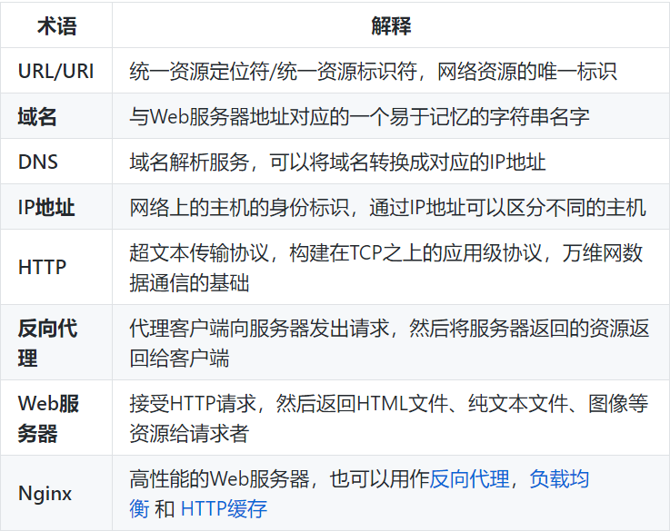

Django
Web应用机制和术语

快速上手
准备工作
检查Python环境：Django 1.11需要Python 2.7或Python 3.4以上的版本；Django 2.0需要Python 3.4以上的版本；Django 2.1需要Python 3.5以上的版本。1
2
3
4
5$ python3 --version
$ python3
>>> import sys
>>> sys.version
>>> sys.version_info
创建项目文件夹并切换到该目录，例如我们要实例一个OA（办公自动化）项目。1
2$ mkdir oa
$ cd oa
创建并激活虚拟环境。1
2$ python3 -m venv venv
$ source venv/bin/activate
说明：上面使用了Python自带的venv模块完成了虚拟环境的创建，当然也可以使用其他的工具，例如：virtualenv或pipenv等。要激活虚拟环境，在Windows系统下是通过”venv/Scripts/activate”执行批处理文件来实现。
cd到scripts目录运行activate.bat
更新包管理工具pip。1
2
3
4(venv)$ pip install -U pip
或
(venv)$ python -m pip install -U pip
注意：请注意终端提示符发生的变化，前面的(venv)说明我们已经进入虚拟环境，而虚拟环境下的python和pip已经是Python 3的解释器和包管理工具了。
安装Django。
(venv)$ pip install django
或指定版本号来安装对应的Django的版本。
(venv)$ pip install django==1.11
检查Django的版本。1
2
3
4
5
6
7(venv)$ python -m django --version
(venv)$ django-admin --version
或
(venv)$ python
>>> import django
>>> django.get_version()
当然，也可以通过pip来查看安装的依赖库及其版本，如：
(venv)$ pip freeze(venv)$ pip list
使用django-admin创建项目，项目命名为oa。
(venv)$ django-admin startproject oa .
注意：上面的命令最后的那个点，它表示在当前路径下创建项目。
执行上面的命令后看看生成的文件和文件夹，它们的作用如下所示：1
2
3
4
5manage.py： 一个让你用各种方式管理 Django 项目的命令行工具。
oa/__init__.py：一个空文件，告诉 Python 这个目录应该被认为是一个 Python 包。
oa/settings.py：Django 项目的配置文件。
oa/urls.py：Django 项目的 URL 声明，就像你网站的“目录”。
oa/wsgi.py：作为你的项目的运行在 WSGI 兼容的Web服务器上的入口。
启动服务器运行项目。
(venv)$ python manage.py runserver
在浏览器中输入http://127.0.0.1:8000访问我们的服务器
说明1：刚刚启动的是Django自带的用于开发和测试的服务器，它是一个用纯Python编写的轻量级Web服务器，但它并不是真正意义上的生产级别的服务器，千万不要将这个服务器用于和生产环境相关的任何地方。
说明2：用于开发的服务器在需要的情况下会对每一次的访问请求重新载入一遍Python代码。所以你不需要为了让修改的代码生效而频繁的重新启动服务器。然而，一些动作，比如添加新文件，将不会触发自动重新加载，这时你得自己手动重启服务器。
说明3：可以通过python manage.py help命令查看可用命令列表；在启动服务器时，也可以通过python manage.py runserver 1.2.3.4:5678来指定绑定的IP地址和端口。
说明4：可以通过Ctrl+C来终止服务器的运行。
接下来我们修改项目的配置文件settings.py，Django是一个支持国际化和本地化的框架，因此刚才我们看到的默认首页也是支持国际化的，我们将默认语言修改为中文，时区设置为东八区。1
2
3
4
5
6
7
8
9(venv)$ vim oa/settings.py
# 此处省略上面的内容
# 设置语言代码
LANGUAGE_CODE = 'zh-hans'
# 设置时区
TIME_ZONE = 'Asia/Chongqing'
# 此处省略下面的内容
动态页面
创建名为hrs（人力资源系统）的应用，一个Django项目可以包含一个或多个应用。
(venv)$ python manage.py startapp hrs
执行上面的命令会在当前路径下创建hrs目录，其目录结构如下所示：1
2
3
4
5
6
7
8__init__.py：一个空文件，告诉 Python 这个目录应该被认为是一个 Python 包。
admin.py：可以用来注册模型，用于在Django的管理界面管理模型。
apps.py：当前应用的配置。
migrations：存放与模型有关的数据库迁移信息。
__init__.py：一个空文件，告诉 Python 这个目录应该被认为是一个 Python 包。
models.py：存放应用的数据模型，即实体类及其之间的关系（MVC/MVT中的M）。
tests.py：包含测试应用各项功能的测试类和测试函数。
views.py：处理请求并返回响应的函数（MVC中的C，MVT中的V）。
修改应用目录下的视图文件views.py。1
2
3
4
5
6(venv)$ vim hrs/views.py
from django.http import HttpResponse
def index(request):
return HttpResponse('<h1>Hello, Django!</h1>')
在应用目录创建一个urls.py文件并映射URL。1
2
3
4
5
6
7
8
9(venv)$ touch hrs/urls.py
(venv)$ vim hrs/urls.py
from django.urls import path
from hrs import views
urlpatterns = [
path('', views.index, name='index'),
]
说明：上面使用的path函数是Django 2.x中新添加的函数，除此之外还可以使用支持正则表达式的URL映射函数re_path函数；Django 1.x中是用名为url函数来设定URL映射。
切换到项目目录，修改该目录下的urls.py文件，对应用中设定的URL进行合并。1
2
3
4
5
6
7
8(venv) $ vim oa/urls.py
from django.contrib import admin
from django.urls import path, include
urlpatterns = [
path('admin/', admin.site.urls),
path('hrs/', include('hrs.urls')),
]
重新运行项目，并打开浏览器中访问http://localhost:8000/hrs。
(venv)$ python manage.py runserver
修改views.py生成动态内容。1
2
3
4
5
6
7
8
9
10
11
12
13
14
15
16
17
18
19
20
21
22
23
24
25
26
27
28
29
30
31
32
33
34
35
36
37
38(venv)$ vim hrs/views.py
from io import StringIO
from django.http import HttpResponse
depts_list = [
{'no': 10, 'name': '财务部', 'location': '北京'},
{'no': 20, 'name': '研发部', 'location': '成都'},
{'no': 30, 'name': '销售部', 'location': '上海'},
]
def index(request):
output = StringIO()
output.write('<html>\n')
output.write('<head>\n')
output.write('\t<meta charset="utf-8">\n')
output.write('\t<title>首页</title>')
output.write('</head>\n')
output.write('<body>\n')
output.write('\t<h1>部门信息</h1>\n')
output.write('\t<hr>\n')
output.write('\t<table>\n')
output.write('\t\t<tr>\n')
output.write('\t\t\t<th width=120>部门编号</th>\n')
output.write('\t\t\t<th width=180>部门名称</th>\n')
output.write('\t\t\t<th width=180>所在地</th>\n')
output.write('\t\t</tr>\n')
for dept in depts_list:
output.write('\t\t<tr>\n')
output.write(f'\t\t\t<td align=center>{dept["no"]}</td>\n')
output.write(f'\t\t\t<td align=center>{dept["name"]}</td>\n')
output.write(f'\t\t\t<td align=center>{dept["location"]}</td>\n')
output.write('\t\t</tr>\n')
output.write('\t</table>\n')
output.write('</body>\n')
output.write('</html>\n')
return HttpResponse(output.getvalue())
刷新页面查看程序的运行结果。
使用视图模板
上面通过拼接HTML代码的方式生成动态视图的做法在实际开发中是无能接受的，这一点大家一定能够想到。为了解决这个问题，我们可以提前准备一个模板页，所谓模板页就是一个带占位符的HTML页面，当我们将程序中获得的数据替换掉页面中的占位符时，一个动态页面就产生了。
我们可以用Django框架中template模块的Template类创建模板对象，通过模板对象的render方法实现对模板的渲染。所谓的渲染就是用数据替换掉模板页中的占位符，当然这里的渲染称为后端渲染，即在服务器端完成页面的渲染再输出到浏览器中，这种做法的主要坏处是当并发访问量较大时，服务器会承受较大的负担，所以今天有很多的Web应用都使用了前端渲染，即服务器只为浏览器提供所需的数据（通常是JSON格式），在浏览器中通过JavaScript获取这些数据并渲染到页面上，这些内容在后面为大家呈现。
Django框架通过shortcuts模块的快捷函数render简化了渲染模板的操作，具体的用法如下所示。
先回到manage.py文件所在的目录创建名为templates文件夹。1
2
3
4
5(venv)$ mkdir templates
创建模板页index.html。
(venv)$ touch templates/index.html
(venv)$ vim templates/index.html
1 | <!DOCTYPE html> |
在上面的模板页中我们使用了这样的模板占位符语法，也使用了{% for %}这样的模板指令，这些都是Django模板语言（DTL）的一部分。
回到应用目录，修改views.py文件。
1 | (venv)$ vim hrs/views.py |
到此为止，我们还没有办法让views.py中的render函数找到模板文件index.html，为此我们需要修改settings.py文件，配置模板文件所在的路径。
切换到项目目录修改settings.py文件。
1 | (venv)$ vim oa/settings.py |
重新运行项目或直接刷新页面查看结果。
(venv)$ python manage.py runserver